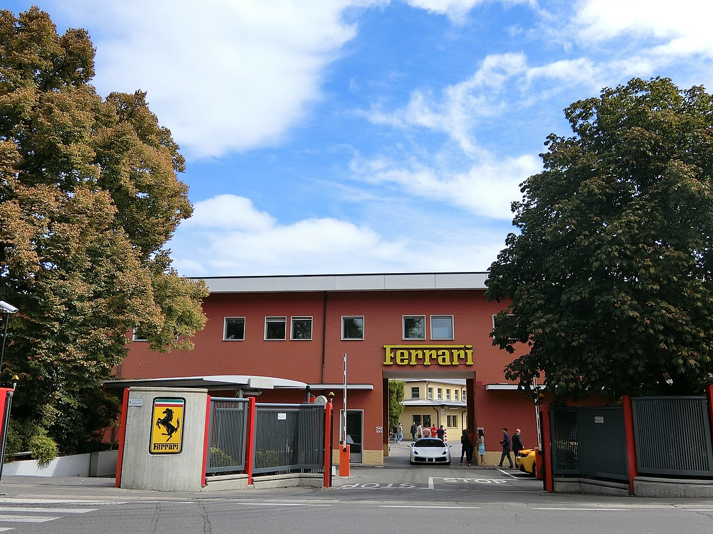
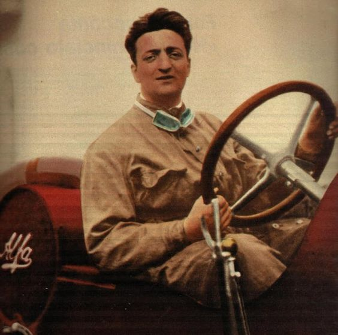

Our Classics
Our Classics

It's a Ferrari, not just a car
In 1945, Ferrari introduced a V12 engine which became one of its signatures. It wasn't until 1947, nearly ten years after Enzo left Alfa that the first Ferrari model the 125 S or 125 Sport, rolled out of the factory entrance of the Via Abetone Inferiore in Maranello, Italy. There were only two models originally produced. The car was entered into its first competitive race in May of that year at the Piacenza Circuit, The car was set to be released earlier, however, the date was pushed back due to the effects of World War II. After the Modena factory was hit by bombs, the company moved to Maranello and built the legendary factory that it still uses today.
The pride of Italian industry
Enzo Ferrari
Enzo Ferrari was said to have been born on 18 February 1898 in Modena, Italy and that his birth was recorded on 20 February because a heavy snowstorm had prevented his father from reporting the birth at the local registry office; in reality, his birth certificate states he was born on 20 February 1898, while the birth's registration took place on 24 February 1898 and was reported by the midwife.[2] He was the younger of two children to Alfredo Ferrari and Adalgisa Bisbini, after his elder sibling Alfredo Junior (Dino). Alfredo Senior was the son of a grocer from Carpi, and started a workshop fabricating metal parts at the family home.[3] Enzo grew up with little formal education. At the age of 10 he witnessed Felice Nazzaro's win at the 1908 Circuito di Bologna, an event that inspired him to become a racing driver.
Following the family's carpentry business collapse, Ferrari started searching for a job in the car industry. He unsuccessfully volunteered his services to Fiat in Turin, eventually settling for a job as test-driver for C.M.N. (Costruzioni Meccaniche Nazionali), a car manufacturer in Milan which rebuilt used truck bodies into small passenger cars. He was later promoted to race car driver and made his competitive debut in the 1919 Parma-Poggio di Berceto hillclimb race, where he finished fourth in the three-litre category at the wheel of a 2.3-litre 4-cylinder C.M.N. 15/20. On 23 November of the same year, he took part in the Targa Florio but had to retire after his car's fuel tank developed a leak.
 Our Classics
Our Classics

 Enzo Ferrari Musuem
Enzo Ferrari Musuem